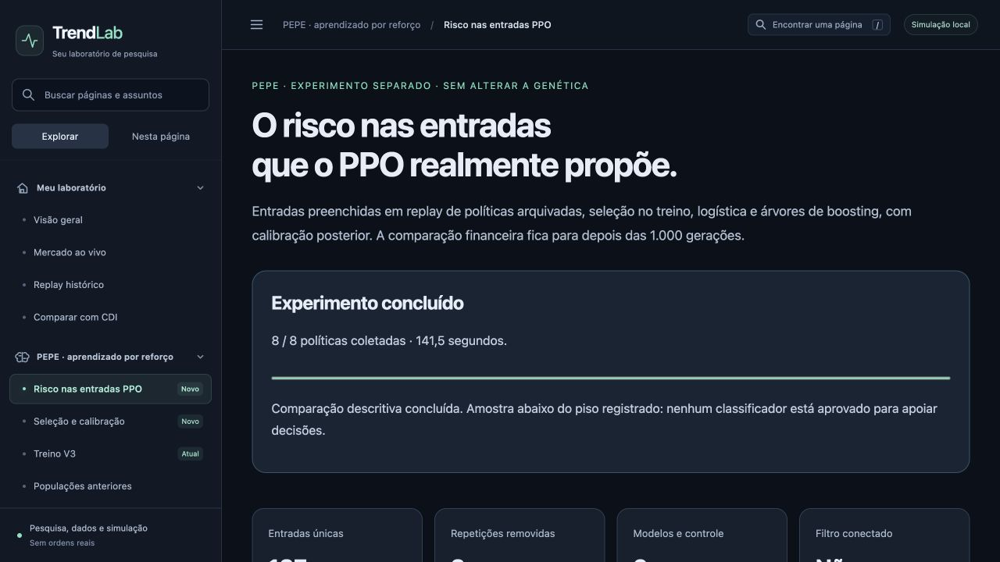

Experimento concluído em 20/10/2026. Oito políticas arquivadas, 140 preenchimentos, 137 entradas únicas após deduplicação. Treino: 91; calibração: 11; avaliação: 34 resolvidas e uma censurada.
Comparação descritiva concluída. Amostra abaixo do piso registrado: nenhum classificador está aprovado para apoiar decisões.
Rótulo hipotético de stop inicial de 1,5 ATR antes do alvo nominal de 2R, a partir de entradas preenchidas no replay. O PPO não executa esse alvo automaticamente: esse rótulo não representa a saída dinâmica, lucro líquido ou utilidade de um filtro. Sem prazo fixo; censura no fim da etapa.
| Variante | Brier | Log loss | Acurácia balanceada |
|---|---|---|---|
| prior | 0.20842 | 0.60768 | 50.0% |
| logistic_all_raw | 0.24464 | 0.68342 | 46.7% |
| logistic_selected_raw | 0.24464 | 0.68342 | 46.7% |
| boosting_all_sigmoid | 0.29913 | 0.79499 | 47.5% |
| boosting_selected_sigmoid | 0.29913 | 0.79499 | 47.5% |
| boosting_all_raw | 0.31502 | 0.84189 | 42.9% |
| boosting_selected_raw | 0.31502 | 0.84189 | 42.9% |
| logistic_all_sigmoid | 0.39760 | 1.08715 | 39.2% |
| logistic_selected_sigmoid | 0.39760 | 1.08715 | 39.2% |
Referência simples superou todos os modelos nesta amostra. A seleção reteve as 16 entradas; braços selecionados e completos são idênticos. Amostra abaixo dos pisos registrados, especialmente a calibração. Dados janeiro–junho/2025 já consumidos em pesquisas anteriores: não é novo teste independente.
Passo 4 somente após conclusão das 1.000 gerações da V3, com outro protocolo e uma nova janela registrada antes do resultado. Mesma política com/sem filtro, carteira contínua, custos, CDI e blocos sem operações na média. Nada inicia automaticamente ou é promovido ao PPO.
Painel local · Método e considerações · Resultados completos · Registro congelado

Pesos, previsões binárias, ledgers e candles permanecem locais. Sem ordens reais.